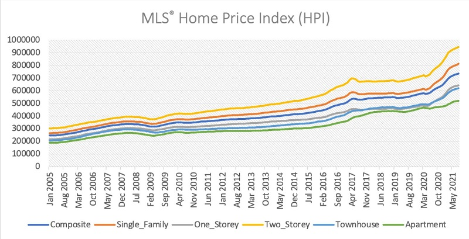

Over the course of the COVID-19 pandemic, Canadians have suffered greatly from the increasing unaffordability within today’s economy. Though consumer prices for goods have seen blistering rise across the table, one area of affordability that is of the minds of voters is the issue of housing. Since the 2005, prices nationwide have more than tripled across all types of dwellings within Canada. For most young Canadians, the prospect of owning a home is but a fairy dream as the demand shocks continue under the poor economic conditions of the pandemic.
It is no surprise then that during the last election, all the major political parties have made extensive plans to solve the growing housing crisis in Canada. The Liberals, who came out of last election with the highest seat count, offered an extensive platform to make housing more affordable for Canadians. This platform includes: additions of $6.7 billion towards housing subsidies, a $5,000 increase in the first-time home buyers tax credit, and the use of the Canadian Mortgage and Housing Corporation (CMHC) to reduce mortgage costs. Along with the plans of the Conservatives and NDP, the political landscape regarding housing has one common trend: policy aiming to quickly satisfy the demand-side of the housing market.
Figure 1: The average price of houses by dwelling type across Canada between Jan 2005-May 2021. Data collected by the Canadian Real Estate association and Multiple Listings Network (MPI).
On paper, this sounds like the logical solution to solving housing affordability. Getting more people into housing would, in the short run, would reduce the overall demand for housing nationwide. If less people are searching for a house, then there is less competition driving up prices and more power for homebuyers to influence the price of home ownership. Though this idea is appealing, the current policies advocated have shown on past occasions to be ineffective or burdensome to a long-term reduction in house prices.
Take for instance the funds committed towards subsidized housing. The current plan would add 2.7 billion towards the National Housing Co-Investment Fund (NHCIF) and another 4 billion into a new “Housing Accelerator fund” that would go exclusively to middle-class housing in the largest Canadian cities. This is because it is believed that subsidizing housing is the simplest way to quickly add new affordable housing units to the market. The problem is that, historically, subsidized housing projects have found little success in Canada or the U.S. Ever since the adoption of the national housing strategy in 2018, the federal government has spent 31.2 billion towards financing housing projects, yet in that same period housing prices have continued to rise at increasingly higher rates. There is a good reason for this. According to a study by the UPenn’s Wharton School of Business, the building of public housing does not at all reduce the overall consumption for housing in the market. Instead, subsidized housing projects only replaces construction for what would be private sector housing, which though potentially more expensive doesn’t require funding by the federal government to construct.
This assumes of course that all the money being allocated to subsidized housing would be efficiently and equitably distributed across the country. So far, the National Housing Co-investment Fund (NHICF) has given 74% of its allocated funds exclusively into projects in Ontario. Further, the additional $2.7 billion allocated to the NHICF will also go into other expenses including “accelerating critical repairs so that housing supply remains affordable” and “developing projects for vulnerable groups.” Though it can be argued that these are important goals, they don’t necessitate the principal issue of solving overall market housing shortages. On the other hand, while the Housing accelerator fund has exclusively committed money towards housing, the Liberals have only committed to building 100,000 houses with the allocated $4 billion. This is not only an insufficient number of houses, but it represents the crucial problem with housing: it’s too expensive to build and fund housing in large Canadian cities.
This same issue works the other way around with the plans for the CMHC. The Plan offers several plans to reduce mortgage costs, including a 25% cut in mortgage insurance rates, offering government-sponsored loans for down payments (“a loan for down payment on a loan”), and offering a deferred payment strategy for borrowers who can’t pay back their premiums. Though these plans would allow more people to afford their mortgage, it would dramatically increase the number of subprime borrowers (i.e. individuals and households with low credit scores) taking out money to afford their home without the means to pay back their loan. Though all people should have a place to call home, the increase of subprime borrowing is a bad strategy for solving the housing crisis. In the short run, the flood of bad creditors would raise housing prices nationwide as current home buyers would be pushed to compete with subprime borrowers over new market listings. In the long run, the potential problems with artificially easing mortgage acquisitions have shown substantial financial consequences. We only have to go back to the economic events of 2007-2009 to see how a market full of poor credit can not only undermine the housing market, but the financial system as a whole.
If the Federal Government is going to try and fix the housing crisis, then the current plan for demand-side strategy is not the answer. Not only does it come with many nasty macroeconomic side effects, but the platform distracts from the principle problem of housing in Canada: supply shortages. The main reason housing is becoming increasingly unaffordable in Canada is not because of financial speculation and foreign investors pricing home buyers out of existing housing, but rather that the yearly construction rates of housing units are insufficient to satisfy the growing number of home seekers in Canada. In fairness, the Liberals have promised to support the supply of housing by encouraging municipalities to create “inclusionary zoning by-laws” and reduce approval times for housing contracts. Though these are steps in the right direction, they are practically footnotes within the larger Liberal housing platform.